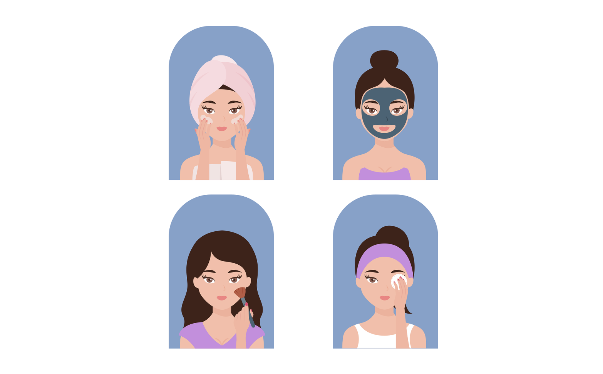

The 10-Step isn't just a routine - it's a lifestyle inspired by Korea's love for healthy skin and supported by many years of scientific research.
It's not about owning countless products, but about choosing the right ones and using them in the correct sequence, to achieve a dewy, ageless looking skin.
